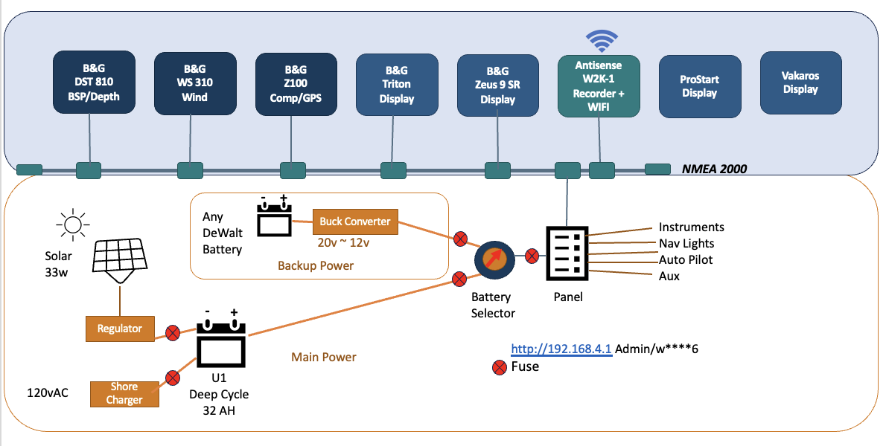
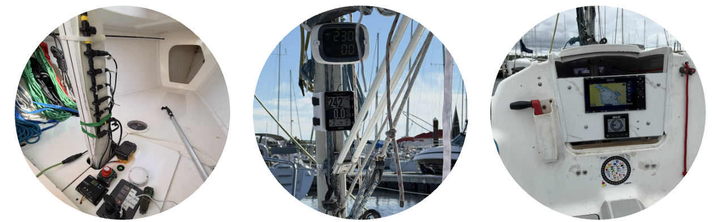

About Critical Mass Racing
Critical Mass Racing is an open-source, AI-assisted race-analysis platform developed for our J/80 sailing program. It is a personal productivity tool rather than a finished, turnkey application for end users. I have made it open source in the hope that other developers and data scientists will find it useful for their own projects.
The software may be used, modified, and distributed under the terms of the Apache License 2.0. See the LICENSE file in the GitHub repository for the complete licence terms.
Technical details are contained in the README.md and ARCHITECTURE.md files.
About Critical Mass
Critical Mass is a J/80 raced in one-design configuration. We are weeknight “beer can” racers who want to better understand where we make gains, where we lose time, and where the biggest performance gaps lie.
This project turns our onboard instrument data into practical post-race coaching. It is designed specifically for a J/80 and tailored to the instruments installed on Critical Mass. It is not intended to replace crew judgment, tactical discussion, or time on the water. Its purpose is to give those conversations a reliable baseline.
Onboard instruments
Our data-logging system includes:
- Speed and depth — B&G DST810
- Wind — B&G WS310
- GPS and compass — B&G ZG100
- Data recorder and gateway — Actisense W2K-1
- Additional race data — Velocitek ProStart and Vakaros instruments
The system records available instrument data throughout each race, creating a second-by-second account of the boat’s speed, heading, wind conditions, position, heel, and other measurements.
What the analysis does
Post-race analysis turns a gut feeling about “how we sailed” into evidence. Each race is divided into three main areas: maneuvers, boat performance, and strategy.
Maneuvers
Every tack and gybe is measured for speed loss, duration, consistency, and recovery time.
Instead of remembering that “one tack felt slow,” we can see that it lost 45% of the boat’s speed and took 18 seconds to recover, while the best tack that evening lost only 9% and recovered in six seconds.
Patterns emerge quickly:
- Which maneuvers cost the most time
- Whether entry and exit angles are consistent
- How quickly the boat accelerates after each maneuver
- Whether performance changes as the race progresses
- Which techniques appear in our best maneuvers
- Which specific skills are worth practising
Mark roundings can also be reviewed to understand approach angles, speed through the rounding, distance from the mark, and acceleration onto the next leg.
Boat performance and polars
Actual boat speed, sailing angle, and velocity made good are compared with the J/80’s predicted performance for the wind conditions.
This helps answer questions such as:
- Were we sailing close to the boat’s target speed?
- Were we pointing too high and sacrificing speed?
- Were we sailing too low and giving away height?
- Was the performance gap caused by speed, angle, or both?
- Did excessive heel, steering activity, or inconsistent trim contribute?
- Were we overpowered or underpowered for the conditions?
The comparison helps separate equipment, trim, steering, and execution issues from changes caused by wind strength or direction.
Polar predictions are a reference, not an unquestionable standard. Their usefulness depends on the quality of the polar data, instrument calibration, sea state, crew weight, current, and local conditions.
Strategy
The boat’s actual track is plotted against the recorded course marks, showing the course we sailed rather than the course we remember sailing.
The analysis can examine:
- Which side of each leg we selected
- Whether that side gained or lost distance
- How wind shifts affected each tack or gybe
- Distance sailed compared with the most direct course
- Layline positioning and overstanding
- Approaches to and exits from mark roundings
- Where gains and losses occurred during each leg
Instrument data cannot always explain why a tactical decision was made. Other boats, bad air, traffic, waves, and visual observations may not appear in the data. The analysis therefore identifies outcomes and likely explanations without pretending to know everything that happened on the water.
Comparing races
The value of the system increases as more races are recorded.
Individual maneuvers and sailing segments can be compared with previous races in similar wind conditions. This gives us a team-specific baseline based on how Critical Mass has actually performed — not only on a theoretical target.
Cross-race analysis can show:
- Whether our tacks and gybes are becoming faster and more consistent
- Which wind ranges create the largest performance gaps
- Whether we are improving against our polar targets
- Which recurring trim or handling patterns are associated with better speed
- Whether certain tactical choices repeatedly produce gains or losses
- Which areas offer the greatest opportunity for improvement
Over time, every tack, gybe, rounding, and leg becomes part of the team’s performance history.
AI-assisted coaching
The system uses specialized AI agents for two types of analysis:
- Race analysis — reviews one race and produces a concise post-race coaching report.
- Comparative analysis — compares the race with previous races and maneuvers sailed in similar conditions.
The AI is instructed to support conclusions with data, distinguish observations from likely explanations, and clearly identify when the available information is insufficient.
Its recommendations are starting points for crew discussion, not absolute conclusions. Sensor errors, calibration problems, incomplete course information, current, sea state, traffic, and tactical context can all affect the results.
The goal
The goal is to establish a useful baseline for what went well and where we can improve at three levels:
- How well we executed our tacks, gybes, and roundings
- Whether we sailed to our target polars
- Whether we chose the right or wrong side of the course
Put together, these views turn each race into a data point instead of just a memory. With enough races, we can begin to distinguish between nights that were fast because of favourable conditions and nights that were fast because of better technique.
That distinction is what makes the information coachable — and gives us something specific to work on the next time we leave the dock.

Fitting It All into the J/80
All electronics are removed from Critical Mass at the end of each season, as we are constantly experimenting with new equipment.
We use custom 3D-printed mounts for the Vakaros instruments and Velocitek ProStart—thanks, Dwayne! These mounts are necessary because of the location of our Cunningham.
We have also developed several temporary companionway sliding-hatch mounting systems, allowing instruments to be added, removed, and repositioned easily.
The NMEA 2000 bus is zip-tied to the mast, keeping it accessible for maintenance and equipment changes.
The Actisense W2K-1 is mounted for quick removal. It comes home after every race, along with the Vakaros instruments and ProStart, because these devices contain our race data.
